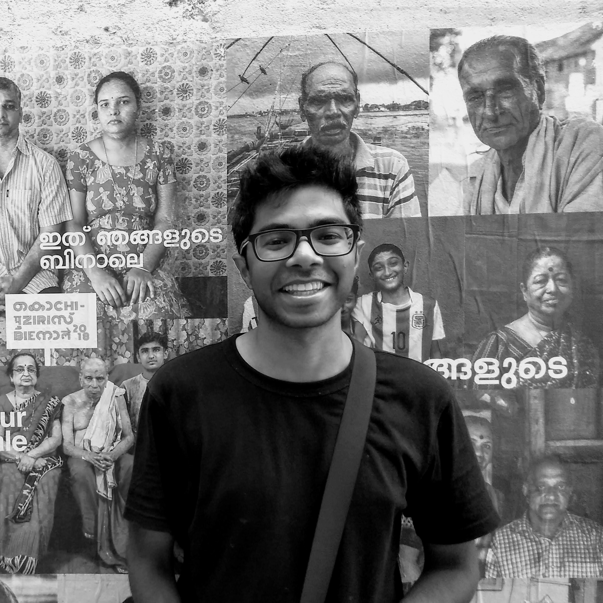

Hello World!
I'm working as a Data Scientist with Myntra, a popular fashion+ e-commerce site in India.
I studied Electrical Engineering at Indian Institute of Technology Kharagpur.
I have interned while at college with Myntra, GE Healthcare and Cyient.
You can reach me at [email]
I like to share some insights into things I waste time on:
An intuitive guide to solving a Rubik's cube using only 1 algorithm
Solving a Rubik's cube isn't hard. Attempting it might be daunting. Here, I explore a particular visualization of the cube solving process called the Old Pochman method. This method is very intuitive to the understand the flow of chaos to order. I go on to show that Old Pochman can be done in only 1 algorithm.
Thoughts on building a theoretical Clash Royale AI
Clash Royale is 21st century chess. Its is a card game played on Phones. Here, I talk about how to model it as a computational problem. Every Game can be solved using an AI if modelled correctly. Games may be solved using Reinforcement Learning. I talk about what a Clash Royale AI should be able to achieve in the process of solving the game.
I have done some year long collegiate projects in deep learning:
Automated Fashion Generation using GANs
With Vishnu Makkapati and Prof. Jayanta Mukhopadhayay
Here we model DCGANs to improve quality of images for periodic data (stripes, checks, etc) of fashion images. We have experimented with different GAN architectures and modified datasets for texture synthesis and analysis. We worked on inverting the GANs to understand data distribution in latent space, and create mix-and-match designs.
Blur Kernel Estimation
With Prof. Rajiv Ranjan Sahay
Here we estimated the guassian blur kernels to quantify the degree of defocus blur of non-uniformly blurred images. Estimation was done patchwise. Trained a Convolutional Neural Networls to learn the blur parameter (sigma) of a gaussian
blur from patches obtained from invariantly blurred textured images (Brodatz Dataset).